Outboard | Electric | 4-Seater
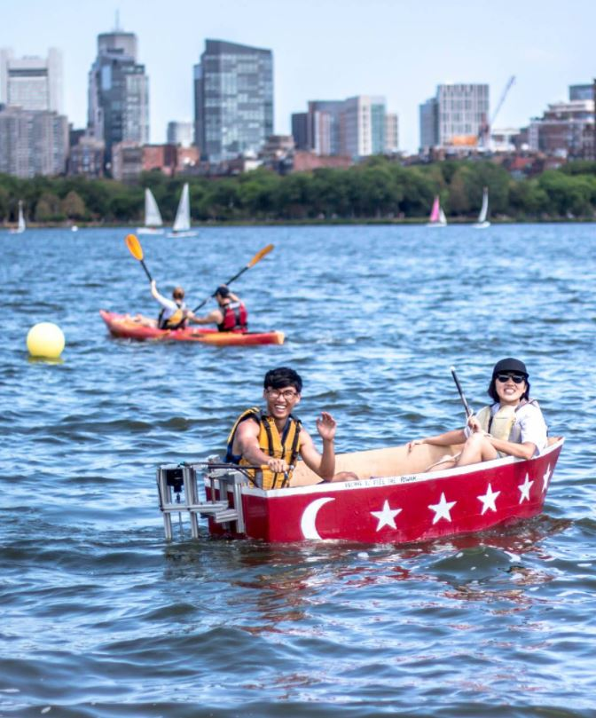During my Sophomore year, I had the privilege of attending a semester at MIT. During this exchange, I tried many different things, including building a boat from scratch and sailing it down the Charles River.
The process of building a boat is actually alot more tedious than I expected, but the boat my team constructed (Brian, Maedah, Naunidh and Ruo Chen) floated up to our expectations.
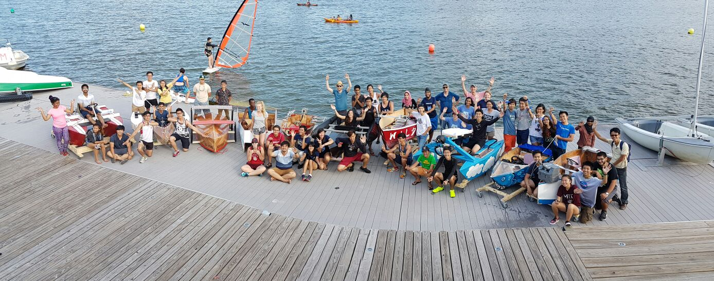Group shot of all the different teams!
For the design phase, I took inspiration from boat catalogues and basically scaled down the forms they used for their boats by taking screenshots and tracing them in Rhino. During the design phase I also made sure that the boat was stable by running buoyancy simulations at different angles of tilts and at different weights (I was very serious about seating 4 people).
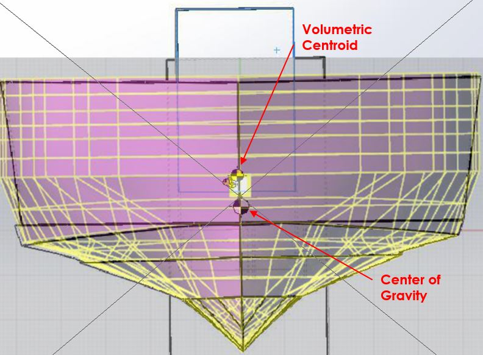The boat's general shape.
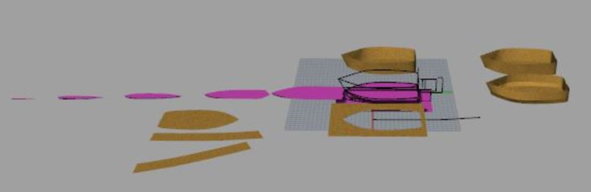Breaking down the boat into smaller pieces that can be cut out on the CNC Router.
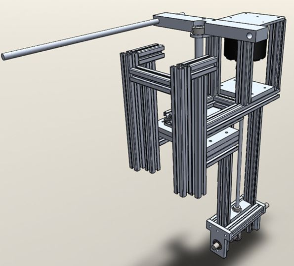The boat's outboard, dismountable drive train (designed by Ruo Chen), it has to match the boat's design if not...
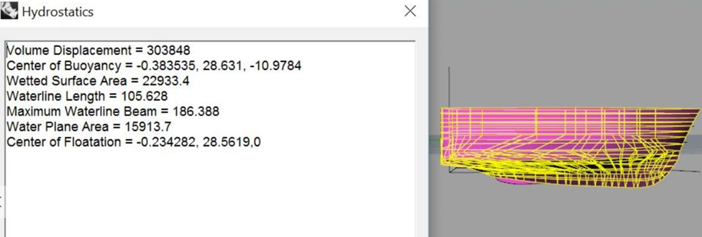Simulating the buoyancy.
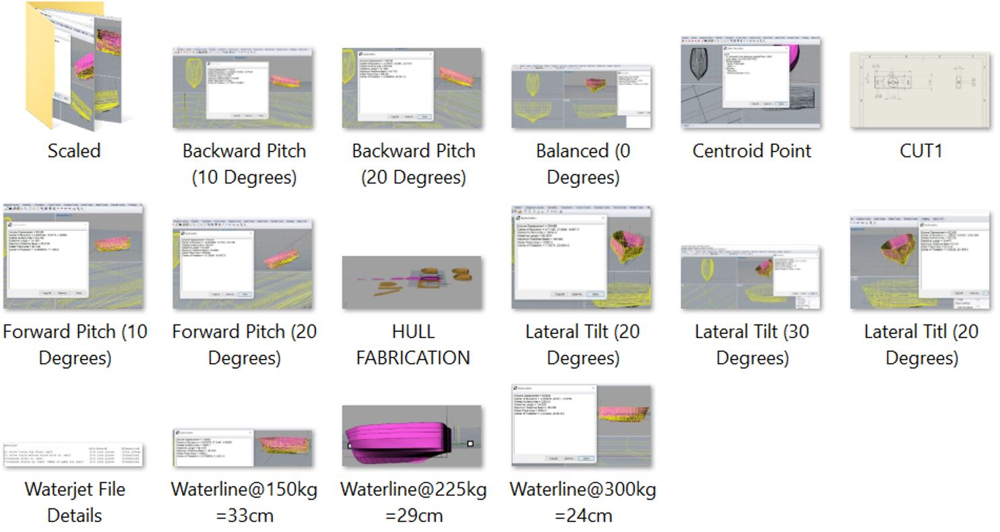Simulating the boat at different angles of tilt and different weights, did not want anyone to drown.
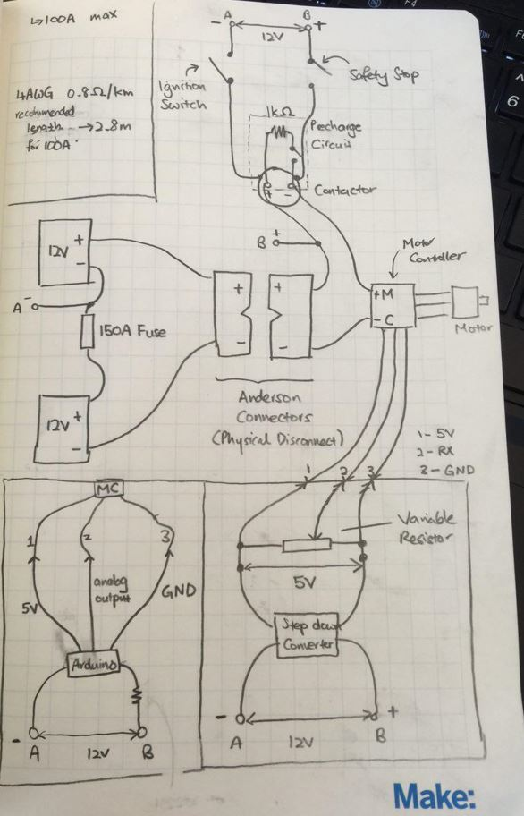Naunidh's circuit design, Nikola Tesla would be proud.
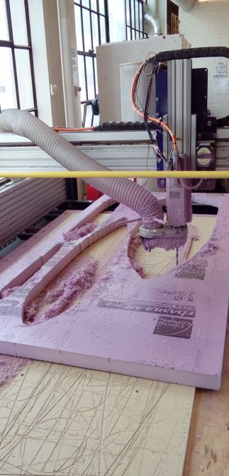The CNC machine: change drill bits for finer resolutions and different materials (I made an 'anchor' for the boat which was a smaller version of the boat, try to spot it).
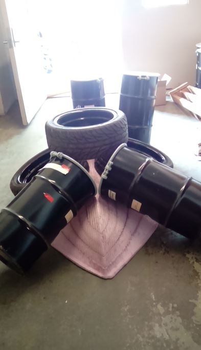Sticking the different layers of foam which form the boat's base, apparently this was the first time a team taking this course is using the foam as the entire base - typically it is used as filler material within the wooden structure.
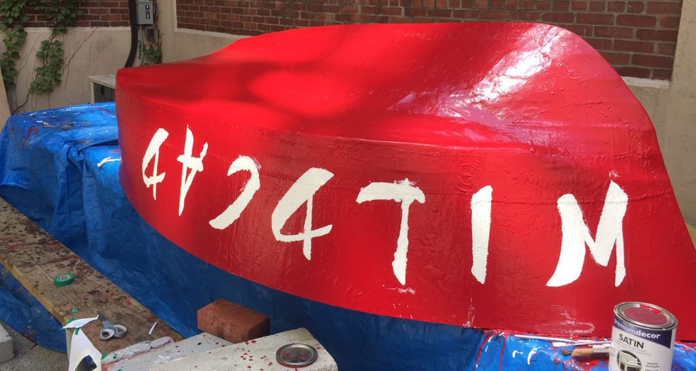Aesthetics, the boat's name is WILDCAD because our team's name was Wildcat.
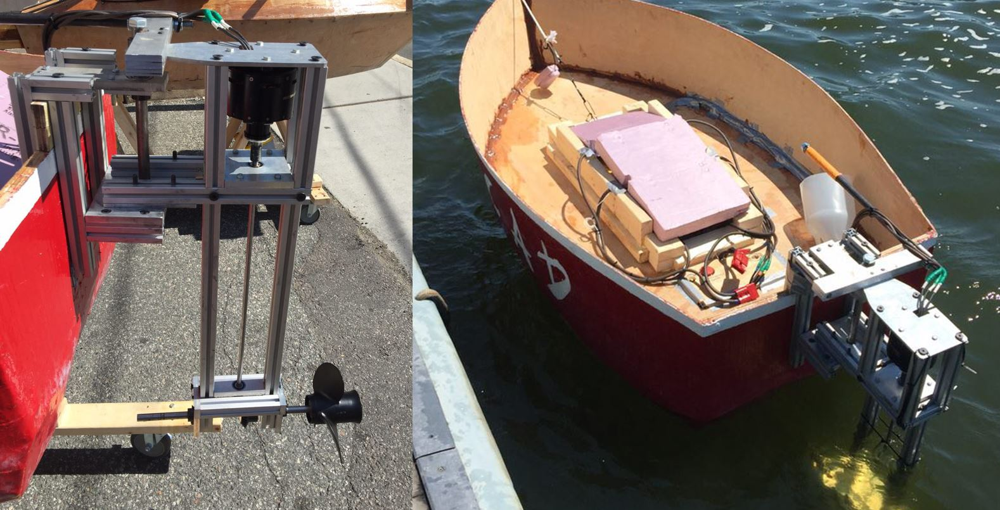End results.
For this project, I took charge of designing the boat (on Rhino), installing all electronics on-board the boat, fabricating boat's parts (CNC Router) and the construction of the boat (hard foam, wood and ALOT of epoxy). This was one of the most enjoyable projects I have completed till date, although the epoxy damaged almost all the clothes I wore there.
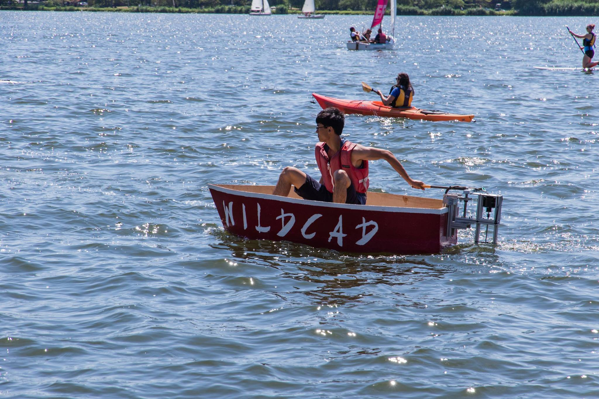